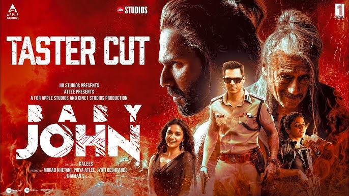
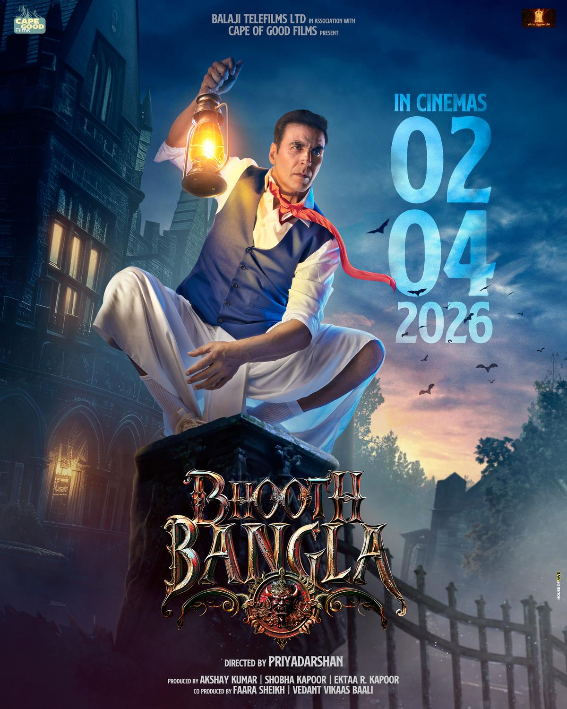
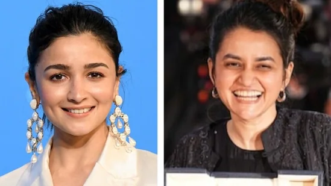
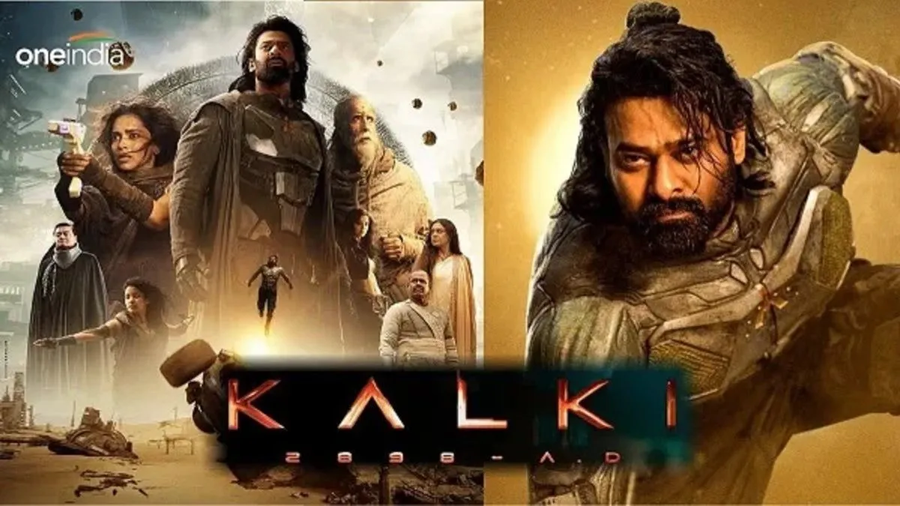

Pushpa 2 worldwide box office collection day 5: Allu Arjun, Rashmika Mandanna's juggernaut crosses ₹880 crore

Pushpa 2 worldwide box office collection day 5: Rashmika Mandanna and Allu Arjun-starrer action thriller continues to soar at the global box office. As per Sacnilk, the Sukumar directorial has now crossed ₹880 crore.Pushpa 2: The Rule, which released globally on Thursday, December 5, has enjoyed a tremendous run not only domestically, but also around the world.
The film has earned ₹709.3 crore (gross) at the Indian box office and ₹171 crore overseas within five days of release. This brings the cumulative worldwide total to ₹880.30 crore.Pushpa 2: The Rule had earned ₹829 crore at the box office in the first (extended) weekend since its release, becoming the "fastest Indian film" to cross the ₹800 crore milestone in worldwide gross collections, the makers said on Monday. Production house Mythri Movies Makers shared the first weekend box office figures of the movie on its official X page.
"BIGGEST INDIAN FILM is the BIGGEST WILDFIRE AT THE BOX OFFICE. #Pushpa2TheRule becomes the FASTEST INDIAN FILM to cross 800 CRORES Gross worldwide with a 4 day collection of 829 CRORES. RULING IN CINEMAS," the banner said in the post.
The makers also released the box office figures of the Hindi dubbed version of Pushpa 2. The film raised ₹86 crore on Sunday, taking its total in the language to ₹291 crore (nett). "A HISTORIC SINGLE DAY in Hindi. #Pushpa2TheRule collects a Nett of 86 CRORES on Day 4 - creating an all time record of the HIGHEST Hindi collection in a single day. "The Wildfire Blockbuster also becomes the fastest Hindi film to reach 291 CRORES NETT in just 4 days," the banner said in a previous post.
Pushpa 2 opened with a historic box office score of ₹294 crore gross on day one. It broke the record for the highest opening in the history of Indian cinema, which earlier belonged to SS Rajamouli's RRR ( ₹223.5 crore), followed by Baahubali 2: The Conclusion ( ₹217 crore), and Kalki 2898 AD ( ₹175 crore).
In its Hindi dubbed version too, the film broke records, netting ₹72 crore on day one and surpassing the opening day figures of Shah Rukh Khan's 2023 hit Jawan, whose Hindi version had earned around ₹65 crore on day one.
Baby John trailer: Varun Dhawan-Keerthy Suresh's actioner looks wholesome; but it's Salman Khan who takes the cherry on the cake!

The much-awaited trailer of Baby John, starring Varun Dhawan and Keerthy Suresh, has finally dropped. Directed by Kalees, the trailer offers a sneak peek into the world of Baby John, blending action, entertainment, humour, and catchy tracks seamlessly. One of the most talked-about aspects was the rumoured cameo by Salman Khan, and fans were on the edge of their seats to see if Bhai would make an appearance in the trailer. And he did! The trailer delivered a brief yet electrifying glimpse of Salman.
The trailer introduces the vibrant and action-packed universe of Baby John. Varun Dhawan shines as Baby John, bringing his signature energy and charisma to the role. Keerthy Suresh also makes a strong impression, promising an entertaining performance. The highlight comes towards the end, featuring a brief but thrilling appearance by Salman Khan. Although his face is partially covered by a black cloth, his unmistakable eyes give him away. He joins Varun Dhawan in a dynamic fight scene against the villains. The trailer concludes with Salman Khan delivering a festive message, wishing everyone a Merry Christmas in advance.
Salman's fans were quick to take to social media to express their excitement. One fan commented, "The last scene was the eyes of Salman Khan. I recognize those eyes," while another wrote, "Salman Khan’s appearance in Baby John confirmed!"
Baby John also stars Jackie Shroff, Wamiqa Gabbi and Sanya Malhotra in pivotal roles. It is produced by Atlee and directed by A Kaleeswaran. The film releases in theatres on December 25.
Akshay Kumar starts shooting for 'Bhooth Bangla', film to release in April 2026

Akshay Kumar had recently announced an exciting collab with Priyadarshan, a horror-comedy titled Bhooth Bangla. As he starts shooting for the film today, he has unveiled the release date of the film as April 2, 2026.
Director Priyadarshan and Akshay Kumar left their fans excited after the much-awaited announcement of a collab on the occasion of Akshay Kumar's 57th birthday. The horror comedy titled Bhooth Bangla is being produced under the banner of Ektaa R Kapoor and Balaji Telefilms Ltd. On his birthday, Akshay dropped a teaser and the film's poster showed the movie's release date in 2025. The Khel Khel Mein actor has started shooting for the film today and with this, he shared an announcement post in which he unveiled a 2026 release date for the movie.
Akshay Kumar locks release date for Priyadarshan's Bhooth Bangla
After successful films like Hera Pheri and Bhool Bhulaiyaa, Akshay Kumar's exciting collaboration post a gap of 14 years left fans excited. However, they will have to wait a little longer to witness Akshay's magic on the big screen in Priyadarshan's horror-comedy.
On Tuesday morning, Akshay Kumar took to Instagram and shared the announcement for the release date of Bhoot Bangla. He wrote, “Beyond excited to be on set with my favourite @priyadarshan.official as we begin the shoot of our horror comedy #BhoothBangla today. Yeh darr aur hasi ka double dose aapke liye ready hoga 2nd April, 2026 ko! Tab tak ke liye aapke best wishes chahiye 🙏.” He also tagged film's team in caption of the post.Meanwhile, Ektaa Kapoor who is bankrolling the project also shared the poster on her Instagram and wrote, #BhoothBangla the date to experience this epic horror comedy on the big screen is 02/04/2026.
Shooting begins today for this much-awaited blockbuster! After the post, fans couldn't seem to control their excitement for the movie.Bhooth Bangla promises to be a horror-comedy, a genre that has seen growing popularity in Bollywood. Previously, on his birthday Akshay tweeted, "Thank you for your love on my birthday, year after year! Celebrating this year with the first look of Bhooth Bangla! I’m beyond excited to join forces with Priyadarshan again after 14 years. This dream collaboration has been a long time coming… can’t wait to share this incredible journey with you all. Stay tuned for the magic!"
He shared a motion poster of the movie, which showed him with a black cat on his shoulders.
‘History is yours’: Alia Bhatt congratulates Payal Kapadia over Golden Globes nomination for All We Imagine As Light

Bollywood star Alia Bhatt gave a shoutout to filmmaker Payal Kapadia over her Golden Globes nomination, who made history by scoring India's first nomination in the Best Director category at the Golden Globes. "History is yours," Alia wrote on Instagram Story, tagging Payal Kapadia, who received nominations for the Best Director (Motion Picture category) at the 82nd Golden Globes awards 2025 for her film All We Imagine As Light. The film has also earned a nomination for Best Motion Picture - Non-English Language.
He shared a motion poster of the movie, which showed him with a black cat on his shoulders.he Golden Globe nominations were announced on December 9 by Mindy Kaling and Morris Chestnut. The recognition of All We Imagine As Light comes as a monumental achievement not just for Kapadia, but also for Indian cinema on the global stage. This is a remarkable milestone, as the film now stands alongside some of the most acclaimed international works of the year.
Rajkummar Rao also wished Payal Kapadia on his Instagram handle by writing, "Congratulations @payalkapadiafilm This is awesome. All the very best. Rooting for you."
All We Imagine As Light follows the story of Prabha, a troubled nurse who receives an unexpected gift from her estranged husband, and Anu, her young roommate seeking intimacy with her boyfriend. Their journey to a beach town allows them to confront their desires and emotions.The film stars Kani Kusruti, Divya Prabha, and Chhaya Kadam in lead roles. It is an official Indo-French co-production between Petit Chaos (France) and Chalk & Cheese and Another Birth (India). It has already made history earlier this year by winning the prestigious Grand Prix at the Cannes Film Festival, marking it as the first Indian film to be featured in the festival's main competition section in 30 years.
Before its Golden Globe nominations, All We Imagine As Light had already garnered significant international acclaim. The film won the Best International Feature trophy at the New York Film Critics Circle Awards and the Best International Feature at the Gotham Awards 2024. These accolades have cemented Kapadia's reputation as one of the most promising directors on the global cinema stage.
Not Singham Again, Stree 2 or Bhool Bhulaiyaa 3, this South blockbuster is IMDb’s Most Popular Indian Movie of 2024

As the year 2024 nears its end, the most popular Indian movie of the year has been revealed by IMDb, and it's not one of the usual suspects. While fans were eagerly awaiting the releases of Singham Again, Stree 2, and Bhool Bhulaiyaa 3, a South blockbuster has stolen the show and taken the crown as the most popular Indian movie of the yearIMDb released the list on Wednesday. Prabhas and Deepika Padukone’s Kalki 2898 AD emerged as the Most Popular Indian Movie of 2024, followed by Stree 2 (second spot) and Maharaja (third position).
Filmmaker Nag Ashwin is ecstatic about his film becoming the No. 1 ranking movie of the year. “It’s truly amazing to see Kalki 2898 AD being celebrated as IMDb’s Most Popular Indian Movie of 2024. This recognition is a testament to the love and support of our incredible audience, who embraced the film with open hearts. We poured our souls into the film and it’s so humbling to see it resonate with all ages across the world,” he said in a statement.
Ajay Devgn and R. Madhavan’s Shaitaan was in the fourth spot, with Deepika Padukone and Hrithik Roshan’s Fighter securing the 5th position in the list.
He shared a motion poster of the movie, which showed him with a black cat on his shoulders.The list has seven Hindi titles, followed by one each in Telugu (Kalki 2898 AD), Tamil (Maharaja), and Malayalam (Manjummel Boys at 6th).
The presence of three sequels: Stree 2, Bhool Bhulaiyaa 3 (7th position) and Singham Again (9th spot) underscore the audience's appetite for established franchises. Raghav Juyal’s Kill was in the 8th spot and Kiran Rao’s Laapataa Ladies in the 10th position.Interestingly, Deepika starred in three movies on the list: Fighter, Kalki 2898-AD, and Singham Again.
The year-end list is based on the actual page views of more than 250 million monthly visitors to IMDb worldwide. It features films released in India between January 1 and November 25, 2024 which have an average IMDb user rating of 5 or higher.